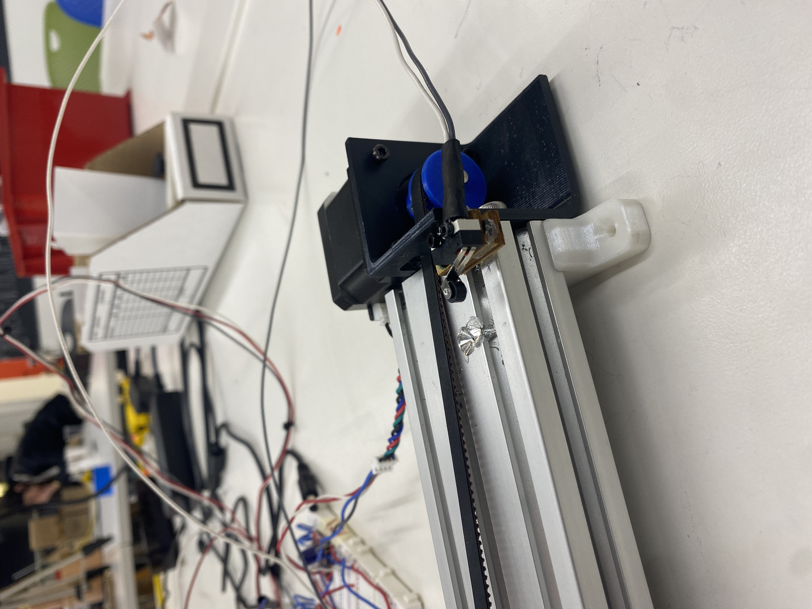
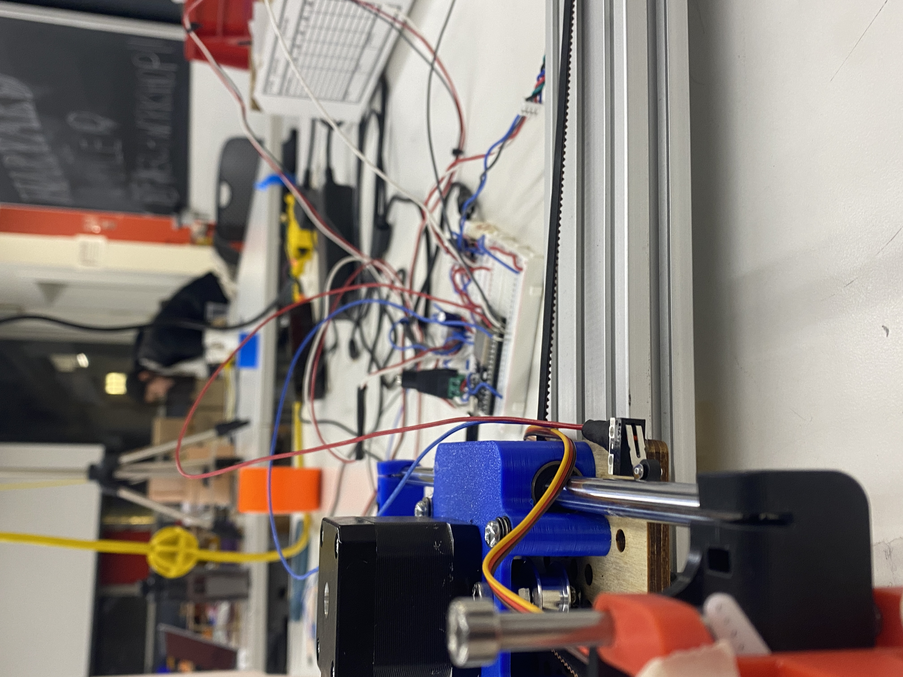
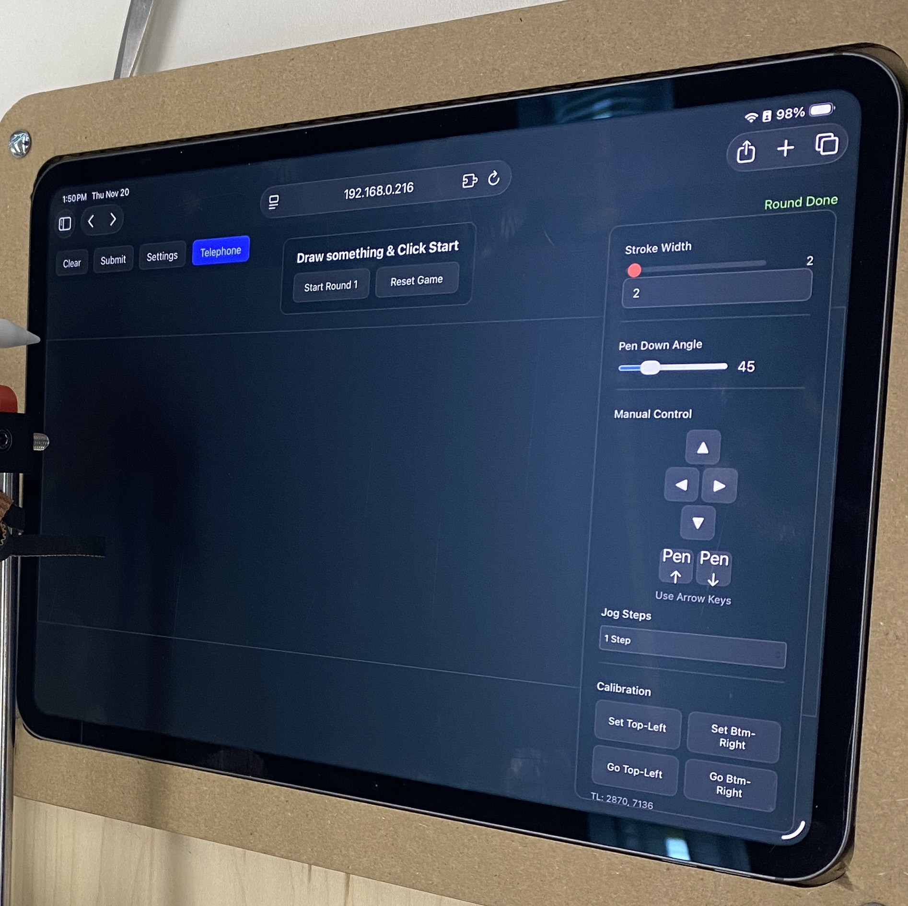

<div class="textcontainer">
<p class="margin"> </p>
<h3>Weeks 10-12: Machine Building</h3>
<h4>Assignment: Build a Drawing Robot</h4>
<h5>The Telephone-L oop Plotter (AKA Descent Into Madness) </h5>
<h6>
Project Overview and Inspiration
</h6>
<p>The Telephone-Loop Plotter reimagines the childhood game of telephone through iterative, mechanical drawing. Using a combination of stepper and servo motors mounted on a 3D-printed frame, the plotter draws on an iPad surface. What’s drawn is transmitted via a live server connection — not through a camera — to a website interface, where the line data is reprocessed into new motion commands. The result is a feedback loop: each drawing is redrawn, reinterpreted, and slightly degraded over multiple cycles, echoing how messages evolve and distort as they’re passed along.</p>
<iframe width="1038" height="584" src="https://www.youtube.com/embed/6Iterdpl_lc" title="DIM Spiral" frameborder="0" allow="accelerometer; autoplay; clipboard-write; encrypted-media; gyroscope; picture-in-picture; web-share" referrerpolicy="strict-origin-when-cross-origin" allowfullscreen></iframe>
<h6>Initial Steps & Mechanism</h6>
<p>We first inventoried the provided parts—rails, three servos, and several 3D printed mounts. Using those components we built the base 2D rail system that every group started with.</p>
<p>X-axis motion demo: </p>
<iframe width="409" height="727" src="https://www.youtube.com/embed/-XhtgWXwWJQ" title="horizontal motion" frameborder="0" allow="accelerometer; autoplay; clipboard-write; encrypted-media; gyroscope; picture-in-picture; web-share" referrerpolicy="strict-origin-when-cross-origin" allowfullscreen></iframe>
<p>X- and Y-axis motion demo: </p>
<iframe width="409" height="727" src="https://www.youtube.com/embed/o2Ki_xpkRjw" title="x and y axis both moving" frameborder="0" allow="accelerometer; autoplay; clipboard-write; encrypted-media; gyroscope; picture-in-picture; web-share" referrerpolicy="strict-origin-when-cross-origin" allowfullscreen></iframe>
<h6>End Effector Design</h6>
<p>Our end effector uses a servo-controlled Apple Pencil mount for precise up-and-down motion. While mechanically similar to the normal pen plotter, its novelty (Bobby approved!) lies in drawing directly on an iPad rather than paper, creating the digital–physical feedback loop.</p>
<p>Servo for end effector: </p>
<video style = "width: 50%; display: block; margin: 20px 0;" src="./End_Effector.MOV" controls></video>
<h6>Homing Sequence</h6>
<p>
We developed a reliable homing system using limit switches for precise calibration. Two switches are strategically placed—see below photos—to define the machine's zero position. Components then trigger the switches, allowing the plotter to reset accurately each time it powers on and maintain precise alignment between digital and physical coordinates. The homing code accounts for each axis’s step count so the return to origin remains repeatable.
<div style="display: flex; gap: 15px; align-items: flex-start; margin-top: 10px;">
<p></p>
<p></p>
</div>
</p>
<p>Homing interface photo: </p>
<p></p>
<p>Homing one axis:</p>
<iframe width="420" height="315" src="https://www.youtube.com/embed/l308SvD5WA4" title="Homing one axis" frameborder="0" allow="accelerometer; autoplay; clipboard-write; encrypted-media; gyroscope; picture-in-picture" allowfullscreen></iframe>
<p>Homing both axes:</p>
<iframe width="420" height="315" src="https://www.youtube.com/embed/FT1-rDYsAK4" title="Homing both axes" frameborder="0" allow="accelerometer; autoplay; clipboard-write; encrypted-media; gyroscope; picture-in-picture" allowfullscreen></iframe>
<p>Homing to origin:</p>
<iframe width="420" height="315" src="https://www.youtube.com/embed/5BQX1-Gi6po?feature=share" title="Homing to origin" frameborder="0" allow="accelerometer; autoplay; clipboard-write; encrypted-media; gyroscope; picture-in-picture" allowfullscreen></iframe>
<p>Interactive settings on the iPad mimic CNC mill controls—top-left, top-right, etc.—and allow incremental nudging to set the desired origin. Calibration values are saved in the web interface so you don’t need to rehome every session.</p>
<h6>Position Mapping</h6>
<p>Our position mapping system translates digital drawing coordinates from the server into precise motor movements on the plotter. Each command received through the WebSocket interface is converted into corresponding X and Y step values, allowing the Apple Pencil to trace the same path on the iPad surface. Because the machine is homed at startup, every position command is mapped relative to a fixed physical origin, ensuring that the digital input and the physical motion remain perfectly synchronized throughout each iterative “telephone-loop” pass. We initially tested the code with pen-and-paper to prove the concept, then switched to the iPad and Apple Pencil once the firmware was stable.</p>
<p>Paper-and-pencil test:</p>
<iframe width="420" height="315" src="https://www.youtube.com/embed/msF1RytKKVE?feature=share" title="Paper and pencil test" frameborder="0" allow="accelerometer; autoplay; clipboard-write; encrypted-media; gyroscope; picture-in-picture" allowfullscreen></iframe>
<p>Slow run of final design:</p>
<iframe width="420" height="315" src="https://www.youtube.com/embed/_GHZhbSnvcE?feature=share" title="Slow run final design" frameborder="0" allow="accelerometer; autoplay; clipboard-write; encrypted-media; gyroscope; picture-in-picture" allowfullscreen></iframe>
<p>Multiple iteration run:</p>
<iframe width="420" height="315" src="https://www.youtube.com/embed/9Jux6oXYT88?feature=share" title="Multiple iteration run" frameborder="0" allow="accelerometer; autoplay; clipboard-write; encrypted-media; gyroscope; picture-in-picture" allowfullscreen></iframe>
<h6>Code Implementation</h6>
<p>
Our firmware, written for the ESP32 in Arduino, integrates Wi-Fi connectivity, WebSocket communication, and stepper motor control to
enable real-time drawing from a web interface. The code hosts an HTML canvas page that streams coordinate data to the ESP32,
which converts pixel positions into precise motor steps and servo movements for pen up/down control.
Limit switches define homing positions for calibration, and all motion parameters—speed, acceleration, and range—are tunable in software.
This setup allows seamless digital-to-physical translation of drawings while supporting iterative “telephone-loop” redrawing through continuous server feedback.
</p>
<a id="btn" href="https://github.com/theotarr/plotter" target="_blank" style="display:inline-block; padding:10px 18px; background:#333; color:white; border-radius:6px; text-decoration:none;">See our code!</a>
<h6>Issues We Solved Through Iterations </h6>
<p><strong>Belt Tensioning & Motion Smoothness:</strong> Zip-tied the belt loop and added a 3D-printed tension clip to increase tension, then enabled microstepping on the stepper motors for smoother motion.</p>
<p><strong>iPad Mounting System:</strong> Kieran CNC-milled a custom wooden mount for Theo’s iPad so the Apple Pencil maintained the correct height/alignment (and it just looks sick).</p>
<p><strong>Limit Switch Reliability:</strong> Replaced faulty switches, adjusted their placement, and soldered the connections for a permanent installation.</p>
</div>